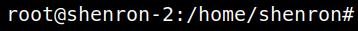
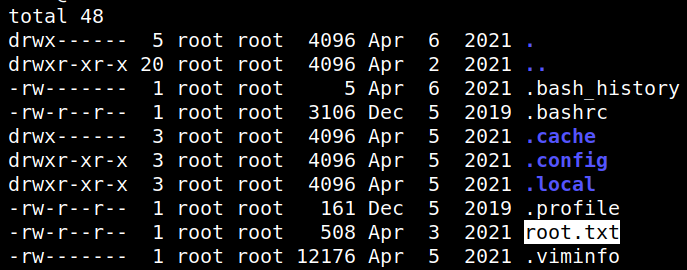
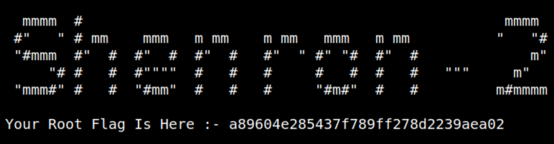

5.3 Switch to root (2nd flag)
1. Switch to “root”.
shenron@shenron-2:~$sudo su
Output:

2. Get the second flag.
root@shenron-2:/home/shenron#cd /root
root@shenron-2:~#ls -al
root@shenron-2:~#ls -al
Output:

3. Show the flag.
root@shenron-2:~#cat root.txt
Output:
